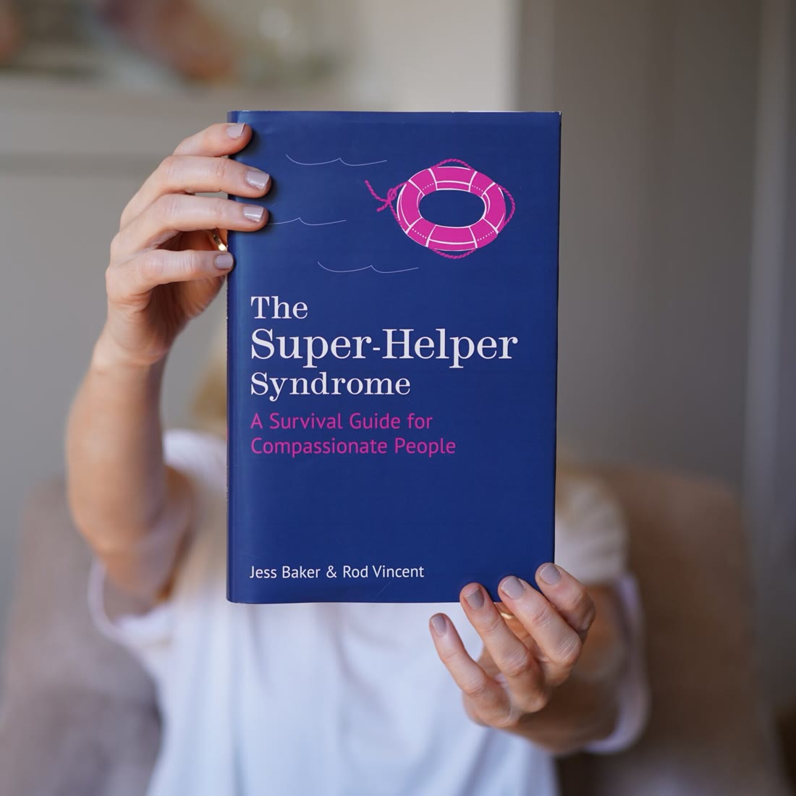

Credibility Rising
Most leaders are not held back by capability. They are held back by how that capability is read in the moments that count. We look at the credibility gap, and how to turn insight and empathy into leadership other people can see.
Welcome · Shropshire
I’m Jess Baker, a Chartered Business Psychologist, leadership coach and author. I help empathic leaders grow into confident, influential decision-makers.
Over the past twenty years I have worked with global brands, national charities, and MBA students at Cambridge Judge Business School. I bring psychological depth, and tools people can actually use.
From the work
Compassion says: “How can I make it better?”
Empathy is not a weakness. It is a powerful asset. It is not only noticing someone’s pain and responding with compassion. It is also recognising someone’s joy, and carrying it forward so it inspires other people, sparks ideas, and builds momentum.
That is what I call Euphoresis: making the most of the moments worth celebrating.
01 · The work
I began in healthcare, including clinical work in the NHS, then retrained as a business psychologist. I am not a clinical psychologist. I also learned a great deal as a senior HR manager in financial services, including what near-burnout feels like.
People-focused work for organisations that want growth without pretending a poster in the lobby will change the culture. I have designed and delivered leadership development, culture change, talent, team-building and employee engagement, across private and public sectors.
Sectors include retail, pharmaceutical, publishing, education, defence, financial services, and private and public healthcare. For medium and large-scale programmes I draw on JB Consulting associates: business psychologists and leadership coaches.
For people who are already capable, and still doubt their own worth. I work with leaders at every level, and with self-employed professionals. The style is direct, gently challenging, and encouraging. You find your own best solution. Your concern for other people stays in the work. So do you.
Keynotes, workshops and webinars on empathy, leadership, imposter syndrome and resilience. I have training in stand-up and improv, and I am comfortable with a live Q&A, including the kind where the questions arrive in a flood. Corporate conferences, International Women’s Day, CarFest and The Big Retreat.
02 · Empathy-Powered Leadership Academy
So find the empathic people you already have, and help them take the lead.
Standard programmes teach feedback, motivation and difficult conversations. Those skills matter, and they land properly with people who are already empathic. Many organisations promote for technical expertise instead, then wonder why managers lean on HR, and why the conscientious people holding the team together never become the ones in the room.
The research I work from finds that empathic leaders increase team engagement by 25%, strengthen organisational commitment by 20%, and are 11% less likely to burn out. The Academy is built for that group: conscientious, committed, good with other people, and inclined to downplay what they contribute.
Diagnostics, interviews and a baseline report. If you already use OPQ, MBTI or DiSC, the diagnostic can sit alongside that data.
Live coaching pods, online content, practical work and reflection. Participants commit about 60 minutes most weeks: a short video or audio, a worksheet, and a 30-minute pod. Six live group Q&A sessions are scheduled in advance. Sponsors have a briefing at the start and a check-in midway.
Follow-up learning, booster calls, and a report on results. People tend to speak up sooner than the twelve weeks. The aim is not a promised job title. It is leaders who are ready when the opportunity comes, and useful to their team now.
Inside your organisation it can carry your own name. With some clients it is the Credibility Leadership Academy. The method stays mine. The results are yours.
It is meant to strengthen what you already run. Empathic leaders make wellbeing, inclusion, engagement and succession work harder, because the people doing the leading can actually do the relational part. It is not a generic emotional-intelligence course for every manager.
That is not a problem. Participants leave with more confidence, influence and resilience in the job they have. Promotions often follow because people become more visible. The return also shows up as engagement, retention and less burnout.
Words like empathy can put some rooms off. I have a pitch you can use: a script, and a slide deck in Canva, PowerPoint, Google slides or PDF. We walk through it on a call, including the questions your colleagues are likely to ask.
03 · Coaching
Imagine finishing a difficult conversation without carrying it all evening. Saying what you think without spending hours taking it apart. Having energy left for the idea, the move, or the work you keep putting off.
You might want a bigger role, a more successful practice of your own, or more say in decisions that matter. You might know exactly what that is. You might need room to find out, away from everyone else’s expectations. Sometimes the pattern is specific: you are the person people turn to in a crisis, and not the one they promote. You are praised for empathy, and passed over for leadership. You do not have to harden, or become someone else, to be taken seriously.
In the last ten years I have helped clients build self-belief across roles, industries and sectors, including hundreds of women whose working lives and personal relationships both shifted. More than a thousand women have been through the online Tame Your Inner Critic programme.
A clarity call is a chance for me to understand the challenge, and for you to see how I work. There is no fee for that conversation.
04 · Speaking
I speak on empathy, leadership, emotional intelligence, relational intelligence, compassionate boundaries, over-helping, ethical power, AI and relationships, and the future of work.
The point is to make the psychology relevant, practical, and possible to use on Monday. Where it helps, I talk about imposter syndrome, self-sabotage and the inner critic from the inside, so the room feels included rather than lectured. I draw on twenty years as a Chartered Business Psychologist, plus neuroscience, positive psychology, stand-up, Mindfulness-Based Stress Reduction and mindful self-compassion.
Most leaders are not held back by capability. They are held back by how that capability is read in the moments that count. We look at the credibility gap, and how to turn insight and empathy into leadership other people can see.
An assertive-conversations framework you can use at work and at home. Improv is in the method, not as an exercise the audience has to perform. Useful for naming tension and challenging people in a way that improves the decision.
Empathy as a way to solve problems and make room for new ideas, with a framework for compassionate conversations. Not a soft-skill interlude.
Built on twenty years of research: compassion for yourself and for other people also benefits the team. Shared language, a simple framework, and tools for wellbeing, engagement, productivity and retention.
How to tackle the imposter syndrome and claim your accomplishments. Research suggests about 70% of people feel like an imposter at some point. We look at what keeps it going, and how to take credit without the flinch.
Why it happens, and practical ways back to focus, self-belief and courage. Psychology and mindful self-compassion, with time to reflect and a reason to act.
Stress triggers, the automatic reactions, and coping strategies from positive psychology, mindfulness and cognitive behavioural models. For your own wellbeing, and for the people around you.
Bespoke sessions as well, including psychological wellbeing, online presence for team leaders, change, and putting Teal and Holacracy ideas into practice.
I have also spoken for Bloom at Olympia, Orbit Fitness Fest, and International Women’s Day audiences including the Co-op, Women Into Leadership, The Ned, Wiley and Total UK. I am regularly on podcasts and BBC Radio. Twenty seconds before a BBC World News interview, the topic changed. There was no time to panic, so I answered the question they actually asked.
05 · The book
A Survival Guide for Compassionate People
My award-winning book, written with Rod Vincent and published in September 2022 by Flint Books, an imprint of The History Press. It has been translated into multiple languages.
There is a kind of person who is better at helping other people than at looking after themselves. They are the backbone of schools, clinics, care homes and hospitals. They are also in offices, gyms, charities and families. Where helping becomes compulsive, and your own needs drop out of the picture, that is the Super-Helper Syndrome.
The book is a way to profile your helping habits, to tell healthy helping from over-helping, and to practise a Healthy Helper Mindset: meeting your own needs, answering the inner critic with mindful self-compassion, and setting boundaries that protect the care rather than withdraw it. A compassionate boundary says: I care, and I also matter.
Order a copy and you can join the book club: conversation with other readers, spotlights, a live session, guided meditations, and a live Q&A.
Order the book Join the book club Take the helper quiz
Publishing enquiries go to Graham Maw Christie Agency, who represent me.

06 · Emplify
Emplify is the movement I co-founded with Rod Vincent. It starts from a question most of us have asked. Why don’t the good people have more power?
By good people we mean the empathic, the conscientious, the considerate. They glue teams together, notice a shift in the room, and do the invisible work other people depend on. They are also the least likely to be given power. Kindness is misread as a lack of credibility. They were brought up to put other people first. And they have seen power used badly, so they step away from it.
You cannot train someone to care. Emplify finds the people who already do, and helps them hold their ground, be recognised, and use power in service of other people. Power in the wrong hands can silence a room. Power in the right hands can protect what is working.
Too many good people are still being overlooked and underestimated by systems that exploit their empathy, but refuse to recognise its power. Emplify exists to change that — together.
There is a free Credibility Check-In, and a Credibility Shift audio. A white paper is in circulation. If this is the part of the work you want, say so when you enquire.
07 · In their words
Over 7,900 ACCA members attended the presentation and live Q&A session, which generated a large number of questions from participants keen to learn more and ask advice. We received some excellent feedback with many commenting on the relevance of the session to their professional lives.
All of these were delivered in an extremely professional and personable style. This gave participants confidence in the information and advice that Jess provided and also the confidence to take an active role throughout the discussion and Q&A sessions.
Jess was really engaging and a great speaker. She gently forced me to consider the self-doubt and lack of self-esteem that often is behind my reaction to certain situations at work. I left the masterclass very positively enthused to swap the imposter syndrome inside me for a new and positive inspiration syndrome.
You’ve taken me on a journey of deep discovery and I feel that I can finally see myself for who I am meant to be.
08 · In print, and on air
I comment on compassion, carers and professional helpers, and on leadership, women in business, mental wellbeing and productivity. Commissioned writing includes Woman & Home, Boots Health & Beauty, HR Zone and ACCA.
As seen in
As heard and seen on
For the RSPCA’s Kind Sparks fireworks campaign I was the expert psychologist, including a film for ITV News.
09 · Enquire
Bring the ambition you’re excited about, the situation you’re finding difficult, or the question you haven’t quite worked out how to ask.
The clearest next step is a clarity call. If you would rather write, send an enquiry and it will open in your email app. This page does not store what you type.